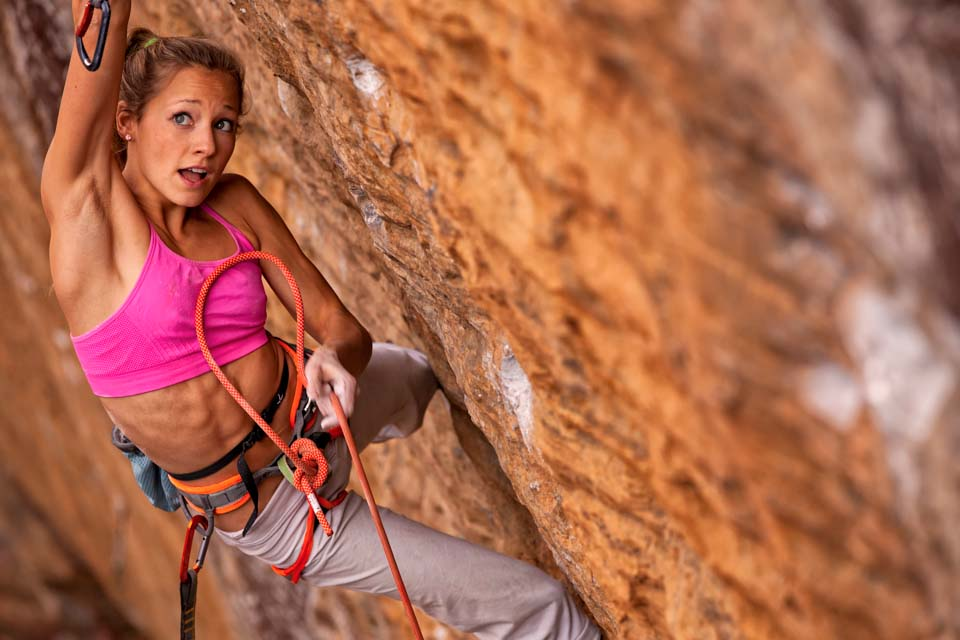
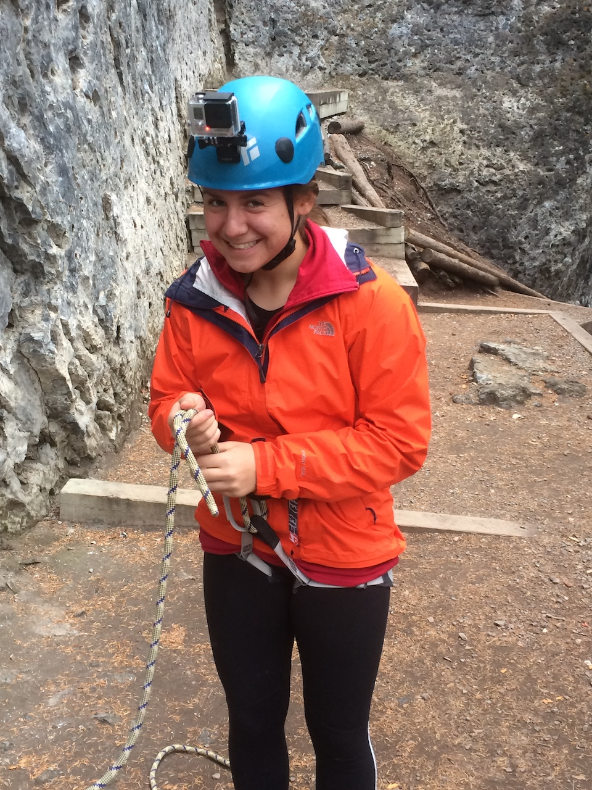
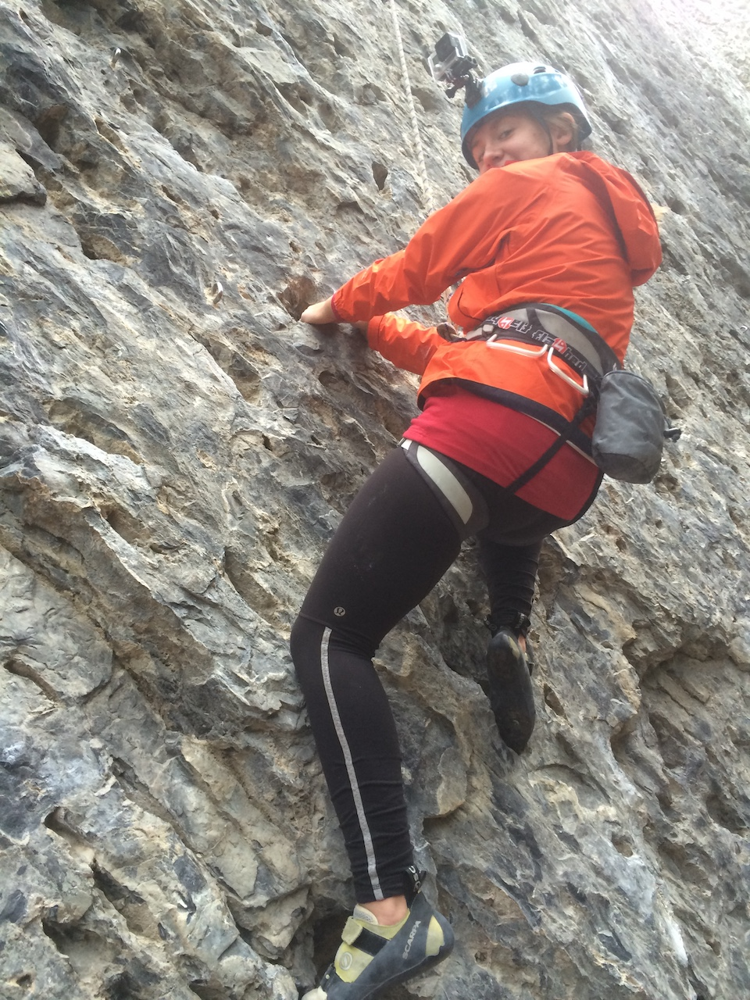
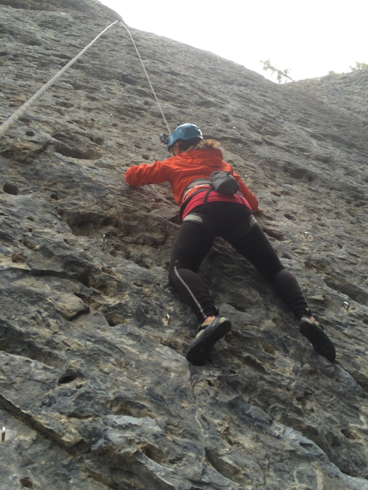
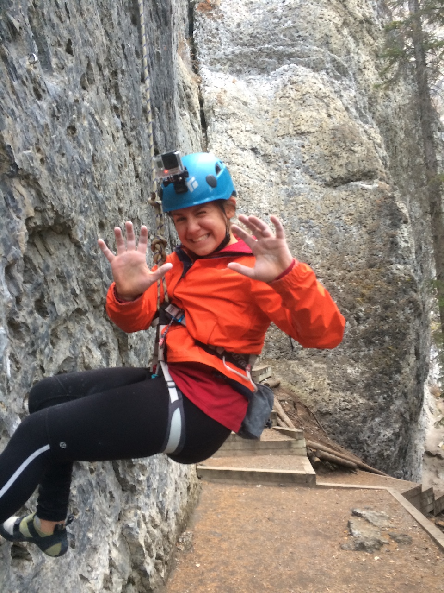

When we lived in California, we had few family sports we enjoyed. My wife and I would play tennis. The twins would play soccer. A few of us might play badminton out in the street between cars going by. But we rarely had family outdoor excursions, until I introduced my wife and kids to rock climbing.
I had picked-up rock climbing during my time as a missionary in France. We weren't normally allowed to do it because of the potential risks. But, we got special permission to do so with friends. We went to a long-abandoned granite mine West of the provençale town, Aix en Provence. I had no equipment. 'Just started climbing barefoot. That began my love of the sport.
In the early aughts, we had moved from Tallahassee, Florida to San Francisco, CA where I was working as an apprentice. I think it was the first spring break for my twin daughters. One of my friends invited us out to Castle Rock in the Santa Cruz mountains. I invested in some minimal equipment, just some harnesses for the kids and a couple "brain buckets", rope and some caribeeners.
They loved it! Well, that's not totally true. They were scared out of their minds at first, but they eventually had some competition between the two of them that lead to enjoyment.
Fast forward seven years to when we moved from San Francisco to Canada, rock climbing in gyms became our way to battle seasonal affective disorder during the long winters. More than anyone else in our family, Audrey took to it the most. At first it was the social aspect; being on a team, making new friends, developing ways for her father to praise her efforts. Then at a certain point, she set her mind to competing and emulating the great, contemporary female climbers like Sasha DiGiulian,
and Alex Puccio.
 That was when my fatherly influence faded and her own ambitions took hold. I was grateful for this. I felt a failure in many respects because we had left San Francisco, the place she loved, and moved to a foreign country with new climate, new people, new langugage (I made her learn French) and new friends. All of that made her feel uncomfortable. But climbing, ironically, was something that gave her a "toe hold."
That was when my fatherly influence faded and her own ambitions took hold. I was grateful for this. I felt a failure in many respects because we had left San Francisco, the place she loved, and moved to a foreign country with new climate, new people, new langugage (I made her learn French) and new friends. All of that made her feel uncomfortable. But climbing, ironically, was something that gave her a "toe hold."




Currently, she is at the gym three nights a week, training and working on her skills. She also teaches rock climbing to young people who are eager to learn. It improves her social skills and at the same time, sharpens her rock-climbing abilities.
I'm very proud of her and I hope she is able to continue. More so, I hope that it improves her confidence in everything that she attempts in life; balance, strength, flexibility, endurance, planning and strategy.